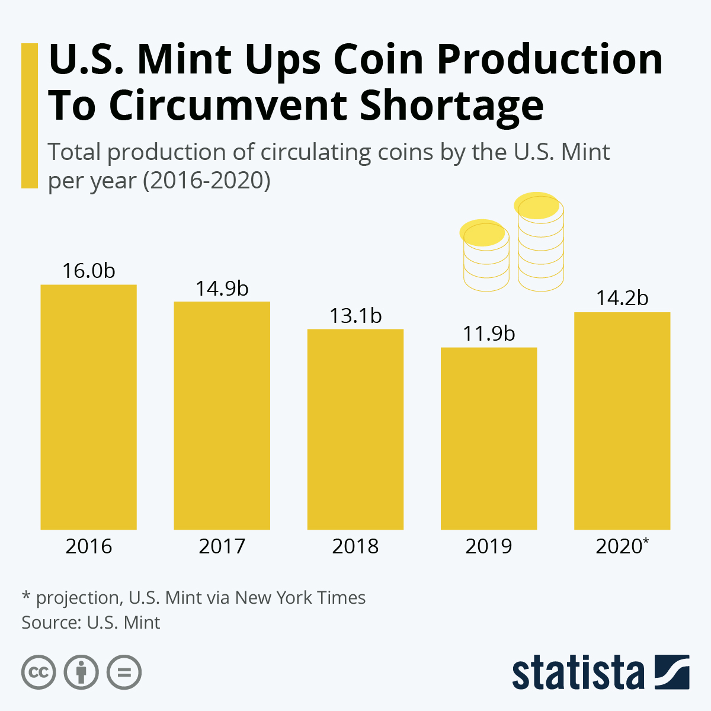

Although I've never been to the US, over the years I've managed to acquire a couple different type of American coins namely Dimes and Pennies. Actually the oldest coin I own in my collection is a 1964 Penny.
The following table shows the two different types of American coins in my current collection
| Type of Coin | Country of Origin | Year Added To Collection | Number of Samples |
|---|---|---|---|
| Dime | USA | 2010 | 4 |
| Penny | USA | 2010 | 6 |
U.S. Mint facilities in Denver and Philadelphia manufacture all of America’s coins for commerce. The chart below shows the total number of circulating coins that the minted each year from the years 2016 to 2020, and it's interesting to see that regardless of economic growth, the number of coins minted vary from year to year. For, example in 2016, the production was the highest in the 5 years with 16.0 billion coins being produced. In the next three years, the production dropped further each year to 14.9 billion in 2017, then to 13.1 billion in 2018 and finally reaching the lowest in 2019 with 11.9 billion coins. This number recovered a bit to reach 14.9 billion, although still less than in 2016. This information has been adapted from https:https://www.statista.com/chart/22203/us-mint-coin-production-for-circulation/. To learn more about US mintage click the chart below.
